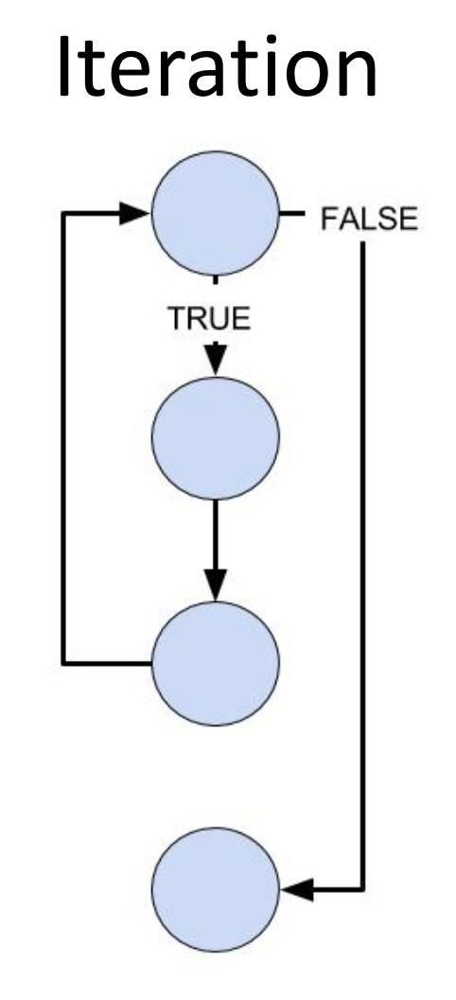
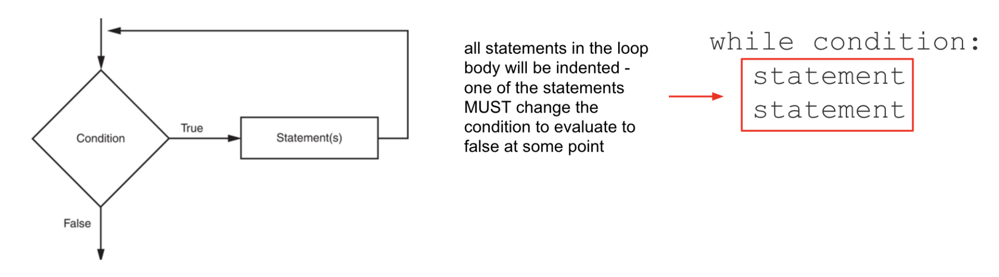

Lesson 1 - while Loops
At the end of this lesson, you will be able to:
- Explain how iteration repeats a group of statements in a program.
- Use a
whileloop to repeat statements 0 or more times. - Recognize and avoid infinite loops.
The second superpower: repetition
Last unit your programs learned to make decisions. This unit they learn the other great trick: doing something over and over without you writing it out a hundred times. That's iteration (or "looping"), and it's the reason a computer can do in a second what would take you all week.
You actually saw a loop already - back in the turtle drawing assignment, for i in range(4): drew a square by repeating four times. Now we'll understand loops properly. There are two flavors:
- A condition-controlled loop (the
whileloop) repeats as long as some condition stays true - you don't necessarily know in advance how many times. - A count-controlled loop (the
forloop, next lesson) repeats a specific number of times.

The while loop
A while loop has two parts: a condition (a true/false test, just like in an if) and an indented block of statements. Python checks the condition; if it's true, it runs the block, then checks again, and again - looping until the condition becomes false. If the condition is false the very first time, the body never runs at all (that's the "0 or more times").

The key thing that makes a while loop end is that something inside the loop changes the thing the condition is testing. Step through this one and watch a climb from 1 toward 10 - each time around, a = a + 2 nudges it closer to making the condition false:
 Bug Alert: If nothing in the loop ever makes the condition false, the loop runs forever (until you manually stop it - for example, by pressing Ctrl-C). This is an infinite loop. The code below never stops, because
Bug Alert: If nothing in the loop ever makes the condition false, the loop runs forever (until you manually stop it - for example, by pressing Ctrl-C). This is an infinite loop. The code below never stops, because num skips right past 10 and the condition num != 10 stays true forever:
num = 1
while num != 10:
print(num)
num = num + 2
Sometimes an infinite loop is intentional, paired with a way to break out. Run the program below and see if you can spot the problem:
Run the program below. (Copy or download the while_true.py and run in your IDE of choice.) Are there any problems with this program? What would you change?
def main():
num = 0
while True:
num = int(input("Enter an integer: "))
if num == 0:
print("0 is neither + or -.\n")
elif num > 0:
print(num, "is positive.\n")
else:
print(num, "is negative.\n")
print("Goodbye!")
main()Show Solution
The problem is the program never tells the user how to stop! The condition is while True:, which is always true, so the loop never ends and "Goodbye!" is never reached. We'll learn a good way to stop a loop like this in the Loop Patterns lesson, where we'll meet the break statement.
Hand tracing a loop
Just like with variables in Unit 3, the best way to really understand a loop is to hand trace it - step through on paper, writing down how the variables change each time around.
Coming up next: the while loop is great when you don't know how many repeats you'll need. When you do know - "do this 10 times" - the for loop is cleaner. That's next.